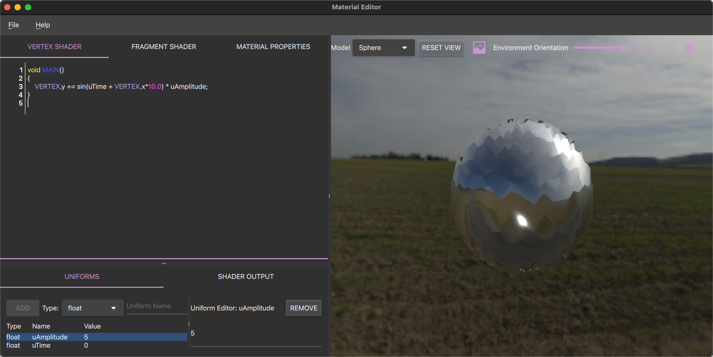
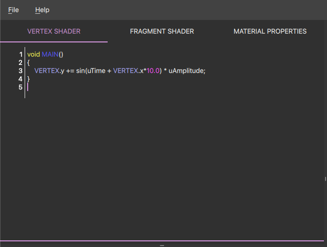
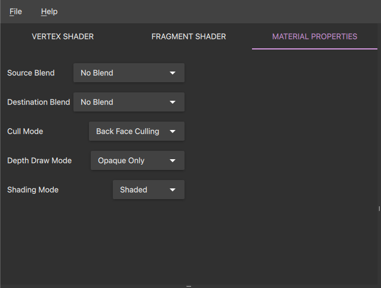
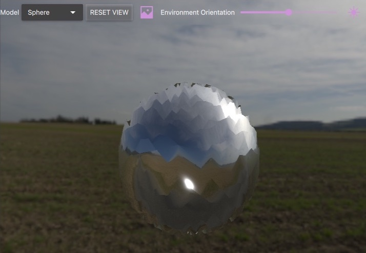
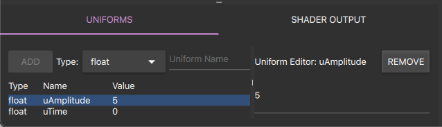
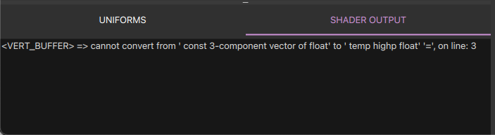
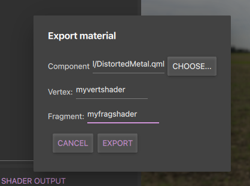

Custom Material Editor
The Material Editor tool
The Material Editor tool is a GUI tool that makes authoring CustomMaterials for QtQuick3D easier by providing: a real-time preview of the material, syntax highlighting, error reporting, and the ability to export the material to a CustomMaterial QML component.
Usage
The Material Editor can be launched by running the command:
$(QTDIR)/bin/materialeditor[.exe]
The Material Editor window consists of two main components, the editor on the left and the preview on the right.

Shader editing
In the editor view there are two editors, one for the vertex shader and one for the fragment shader. When editing the shader snippets the result of those changes will immediately become visible in the preview. If the material could not be assembled a message describing the problem will be visible in the output panel.
The language used for writing the CustomMaterial's shader snippets is Vulkan-style GLSL with some additional keywords that are specific for QtQuick3D, these are easily identifiable by being written in all upper-case characters. The QtQuick3D specific keywords will also be highlighted by the editor.
For a more detailed overview of the language used in shaders snippets and how they interact with the rest of the rendering pipeline, see the Programmable Materials documentation.

Material properties
The Material Properties section contains the common QML properties for the material. These properties and how they affect the material are described in more details in the CustomMaterial documentation.

Preview
In addition to showing how the current material is rendered, the preview panel contains a selection of controls that can be adjusted to see how the material looks under different conditions. These controls allows the user to: Select a different model, toggle the usage of Image Based Lighting, turn the scene light on or off, and adjust the rotation of the environment. It's also possible to orbit around the model using the mouse.

Uniforms
The uniform table is where the uniforms used by the shaders are listed. Uniforms can be added, removed or changed at any time, but all uniforms used by the shader snippets needs to be added to the uniform table. Once a uniform is added it will become accessible to both shaders. When exporting the material to a QML component the uniforms will become properties on the material component.

Output panel
The output panel shows diagnostic messages, for example, errors found in the shader snippets.

Importing shaders
Shaders snippets can be imported into the application, these have the file extension .vert and .frag and are expected to contain plain-text. Imported shader snippets will of course need to be adapted, manually, if the shader code is not in a language or in a form that's compatible with the CustomMaterial already (no translation is attempted by the tool.)
Saving and loading projects.
The Material Editor can save or load project files using it's own project format. The extension of the Material Editor project files are .qmp.
Note: The Material Editor's project file-format is not intended for runtime usage, it is only intended to be used with the Material Editor.
Exporting.
For the material to be usable from an application it needs to be exported as a QML Component, this can be done by opening the export dialog from the application menu. The export dialog will ask for an output folder, the name of the material component, and the name(s) of the shader snippets. When the material has been successfully exported the output folder will contain a QML Component describing the material together with any shader snippet and texture needed by the material.
